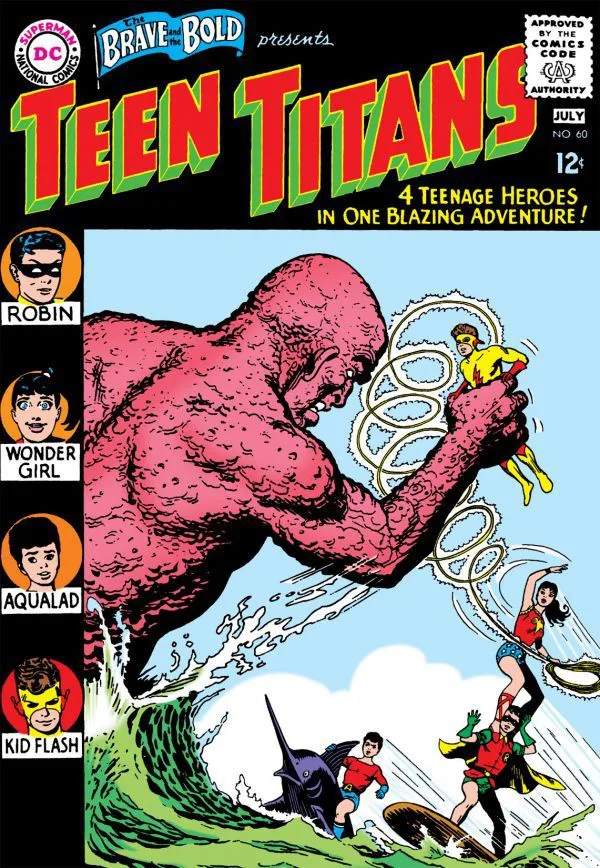

Todo comienza con los Jóvenes Titanes originales en los 60. El equipo estaba compuesto por Robin, Kid Flash, Aqualad y Wonder Girl. Después se unieron Speedy, el compañero de Green Arrow, y se enfrentaron a problemas sociopolíticos como la Guerra de Vietnam y a conflictos raciales. En un momento de los 70 hubo un pequeño parón para el equipo original, pero cuando volvieron se les unió el héroe afro-americano Bumblebee y dividieron esfuerzos con la adición de un equipo de la costa oeste (¿creíais que solo los Vengadores habían hecho esto?). El primer equipo terminó cuando los héroes, que ya no eran estrictamente adolescentes, reconocieron el paso del tiempo y continuaron con sus vidas. Por tanto, varias versiones del equipo acabaron siendo revividas, reformadas o creadas de la nada a partir del relanzamiento en los 80, que cimentó a los Jóvenes Titanes como parte intrínseca del Universo DC para las décadas subsiguientes.
Hablamos de montones de héroes con súper poderes que han trabajado en equipo durante la friolera de seis décadas. Resulta muy difícil listar cada uno de los poderes y habilidades de todos estos individuos. Conformaos con saber que dados sus variados orígenes, los miembros de los Jóvenes Titanes tienen incontables súper poderes -algunos basados en la ciencia, otros en la magia y algunos simplemente en la habilidad (de que Batman les entrenó). Juntos forman un equipo formidable, que tiene que enfrentarse a un equipo de adversarios igual de formidable, como le pasa a cualquier equipo de héroes desde los anales de los cómics.
Aunque muchos apuntan a The Brave and the Bold#54 (julio de 1964) como el debut del equipo, solo es verdad en parte. Al trío de Robin, Kid Flash y Aqualad se les une Wonder Girl en el número #60 (julio del 65), y es entonces cuando adoptan el nombre, "Los Jóvenes Titanes." A todos los efectos, podemos considerar a estos cuatro héroes los miembros fundadores de los Titanes. El guionista Bob Haney fue el responsable de unir a estos héroes y de llevarlos a múltiples aventuras, tras aparecer en Showcase #59 (diciembre del 65), comenzaron a aparecer en su propia serie en febrero de 1966. Varias veces se interrumpió esta serie, hasta que finalmente el grupo se separó en febrero de 1978 con Jóvenes Titanes #53. En los 90 un "rejuvenecido" Ray (Atom) Palmer lideró un nuevo equipo de Jóvenes Titanes que incluía a Prysm, Risk, Joto, Argent, Arsenal y varios héroes más. Este equipo operó tras la "Hora Zero," mientras otro grupo formado por miembros anteriores también actuaba sin el 'Jóvenes'. En los 1000 también vimos a otro equipo que cambiaba de Robin (Tim Drake y no Dick Grayson), de Wonder Girl (Cassie Sandsmark y no Donna Troy) y Kid Flash (Bart Allen y no Wally West). Se les unía un clon de Superboy llamado Kon-El, pero al llegar a la década de los 2010, la constante confusión de los constantes reinicios del universo DC llevó a aún más variantes del equipo, a veces eliminando la existencia de versiones anteriores y reescribiendo por completo la historia de los Titanes. Para calmar las quejas de los fans, esa historia se restauró en la miniserie "La Cacería de los Titanes", y durante la iniciativa DC Rebirth se lanzaron dos equipos de Titanes, con dos de los cuatro miembros originales cada uno, uniéndose a colegas de anteriores versiones. ¿Ya te hemos liado lo suficiente? Pues imagina cómo lo hemos pasado nosotros para resumirlo todo.
Los Teen Titans debutan en la década de 1960, compuestos por los 5 compañeros (sidekicks) de los héroes más grandes de DC, uniéndose para luchar contra el crimen y forjar un vínculo que duraría hasta la su edad adulta.
Mientras que Robin, Wonder Girl, Speedy, Aqualad y Kid Flash han evolucionado hacia roles más maduros, todos ellos formaron el verdadero núcleo de los Teen Titans, incluso mucho más allá de su adolescencia, convirtiéndose en los pilares del grupo y estando aún hoy en día asociados a ellos (aunque sea intermitentemente) de una forma u otra."
